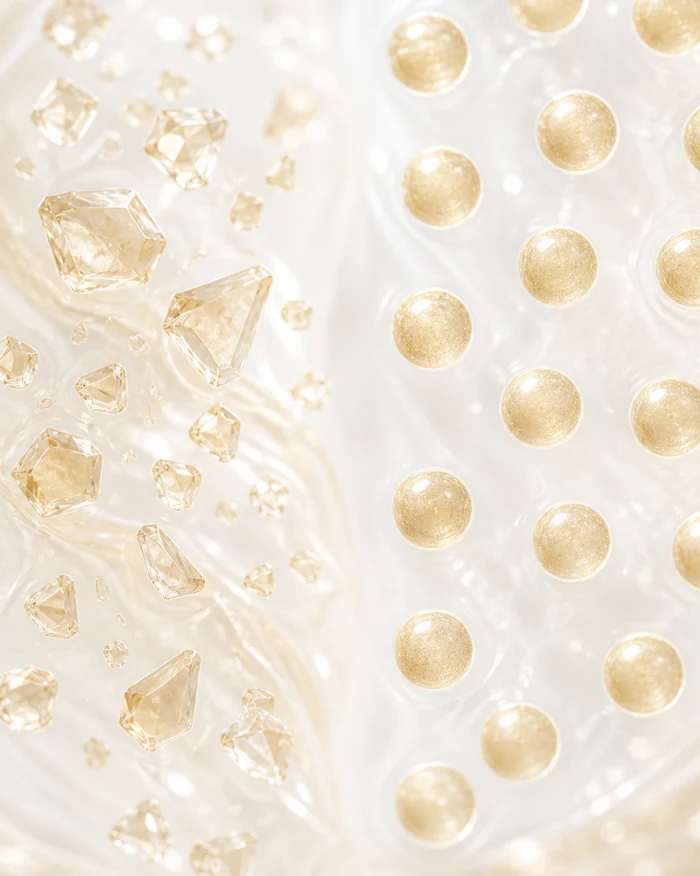
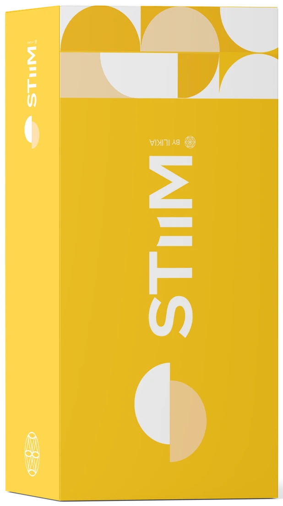
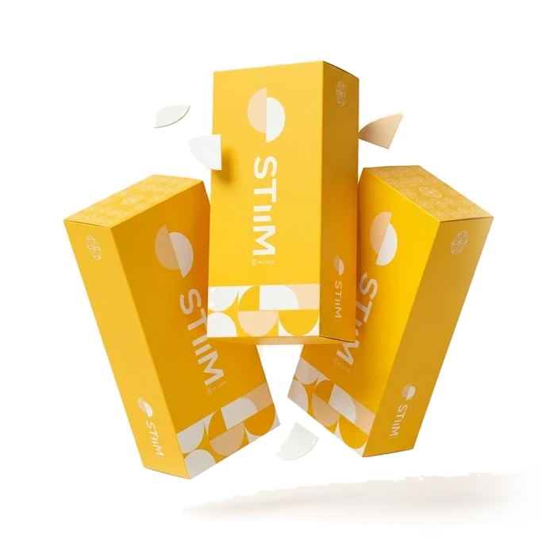
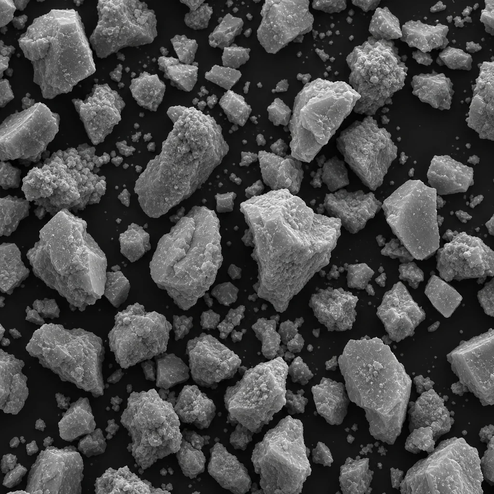
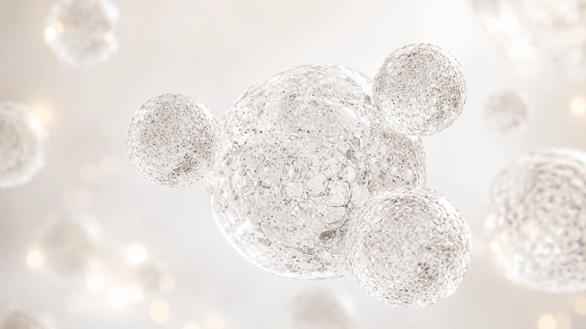
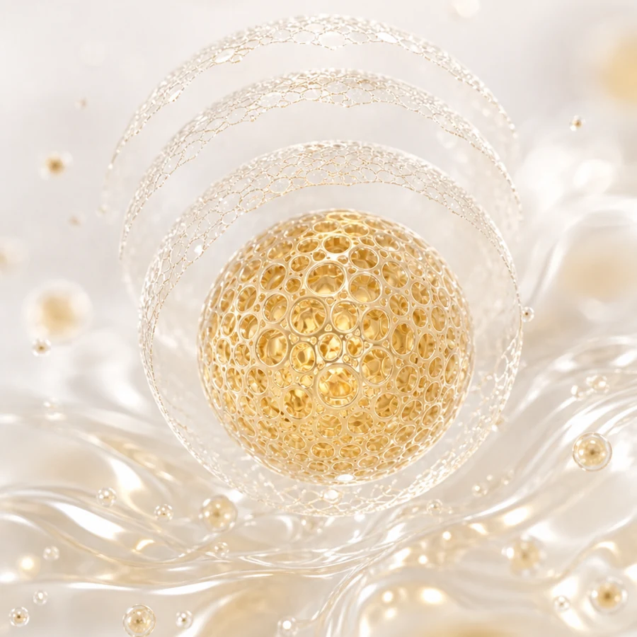
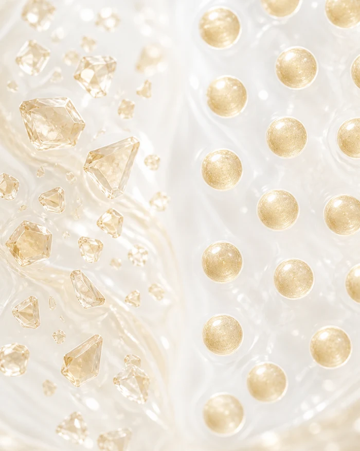

Produto A
“cubo de açúcar”
Degradação rápida e irregular, com perda precoce de volume.

Bioestimulação · Matriz Extracelular · Longevidade
A Hidroxiapatita de Cálcio da ILIKIA, desenvolvida para bioestimulação de colágeno e regeneração tecidual, atua também na estruturação e na melhora global da qualidade da pele.1
Saiba mais sobre STIIM
Ciência aplicada à longevidade da pele.
Resultados que evoluem com o tempo.
O que é STIIM
STIIM é um bioestimulador de Hidroxiapatita de Cálcio (CaHA) com tecnologia avançada que atua na estrutura dérmica, função celular e qualidade da pele. Promove regeneração tecidual através de um processo inflamatório controlado e biocompatível.

Composição
Diferenciais técnicos
A tecnologia Lattice-Pore® garante estabilidade e segurança. Microesferas regulares, na faixa de 25–45 µm, enquanto o Produto A se dispersa de forma irregular.
Morfologia da superfície FE-SEM x5.000


Padrão de degradação
“cubo de açúcar”
Degradação rápida e irregular, com perda precoce de volume.

camada por camada
A estrutura Lattice-Pore® degrada de forma gradual e controlada, em camadas concêntricas. Liberação progressiva que sustenta o estímulo por mais tempo.

Depósito mais homogêneo e resposta biológica superior.

Mecanismo de ação
Curto prazo
até 4 semanas
Médio a longo prazo
até 24 meses
Longevidade celular
contínuo
Com base no aumento dos genes SIRT-1, SIRT-3 e FOXO3.1
Evidências científicas
Restauração da matriz extracelular e longevidade cutânea, com produção equilibrada de colágeno tipo I e III, sem caracterizar fibrose exacerbada.
Espessura dérmica em 120 dias
Colágeno tipo I em 2 semanas pico +449% em 2 meses
Colágeno tipo III em 2 semanas pico +457% em 2 meses
Benefícios percebidos em 12 meses
Tempo de ação sustentada
Indicações e áreas de tratamento
Indicado para bioestímulo de colágeno, remodelação tecidual e refinamento da qualidade da pele.
Inclui melhora de elasticidade, textura, firmeza e tônus.
Perfil do paciente e versatilidade clínica
De pacientes jovens a peles maduras. É o que o paciente moderno mais busca: qualidade, naturalidade e longevidade.
Por que é versátil?
Porque cada paciente exige uma resposta. STIIM entrega todas elas.
Quero conhecer o STIIMA escolha para quem busca
STIIM atua na estrutura da pele, promovendo qualidade, firmeza e longevidade cutânea.
Falar com a ILIKIAAcesso profissional
Para médicos e clínicas habilitados. Material técnico-científico, evidências clínicas, protocolo de aplicação e condições comerciais exclusivas.
Nossa equipe entrará em contato pelo canal informado com a lâmina técnica completa do STIIM.